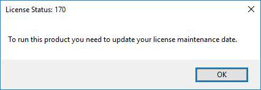

FAQ-1122 「この製品を実行するには、ライセンスのメンテナンス期限を更新する必要があります」というエラーメッセージが表示されます。どうしたらよいでしょうか？
Update-Maint-Date-to-Run-This-Product
最終更新日：2023/3/17
Originを起動したときに次のようなエラーメッセージが表示された場合
License Status: 170
この製品を実行するには、ライセンスのメンテナンス期限を更新する必要があります
- 
クライアントマシンにインストールされているOriginのバージョンがメンテナンス契約でサポートされているかどうか、Originライセンスサーバーの管理者に確認してください。
- サポートされている場合、メンテナンスの更新後にサーバー上のライセンスファイルを更新したかどうかを確認してください。
- 更新していない場合、このページの操作で新しいメンテナンス期限が設定されたライセンスファイルに更新してください。
- ライセンスファイルを更新済みの場合は、LMToolsのStart/Stop/RereadタブにあるReread License Fileボタンを押してください。
サポートされていない場合は、現在のOriginをアンインストールし、代わりにサポートされているバージョンのOriginをインストールしてご利用ください。
- このページの操作で新しいメンテナンス期限が設定されたライセンスファイルに更新してください。
- または、Origin上でヘルプ: ライセンスのアクティブ化を選択して「アクティブ化」ボタンをクリックします。これにより新しいメンテナンス期間でライセンスが更新されます。
キーワード:Lic Status: 170, ワーバーに接続できない, 3分, ライセンス期限切れ, ネットワーク, FlexLM サーバ, フローティングライセンス, チェックアウトできない, 更新, メンテナンス契約更新